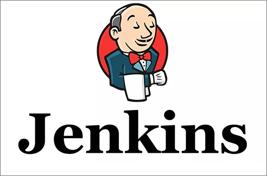

Jenkins is an open source automation server written in Java. Jenkins helps to automate the non-human part of the software development process, with continuous integration and facilitating technical aspects of continuous delivery. It is a server-based system that runs in servlet containers such as Apache Tomcat. It supports version control tools, including AccuRev, CVS, Subversion, Git, Mercurial, Perforce, TD/OMS, ClearCase and RTC, and can execute Apache Ant, Apache Maven and sbt based projects as well as arbitrary shell scripts and Windows batch commands.
Download Now